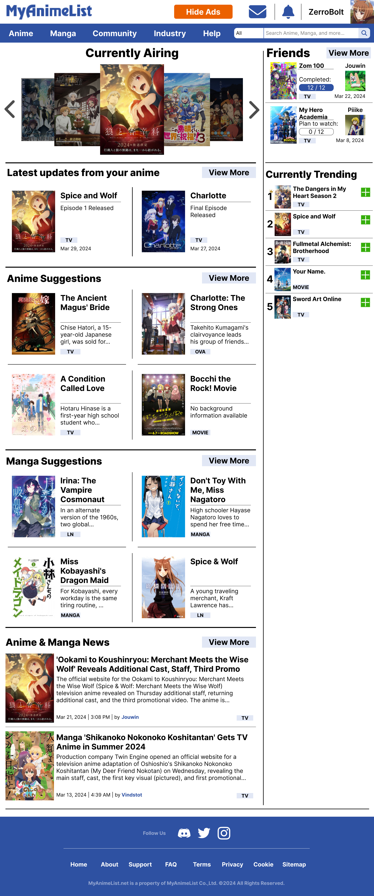
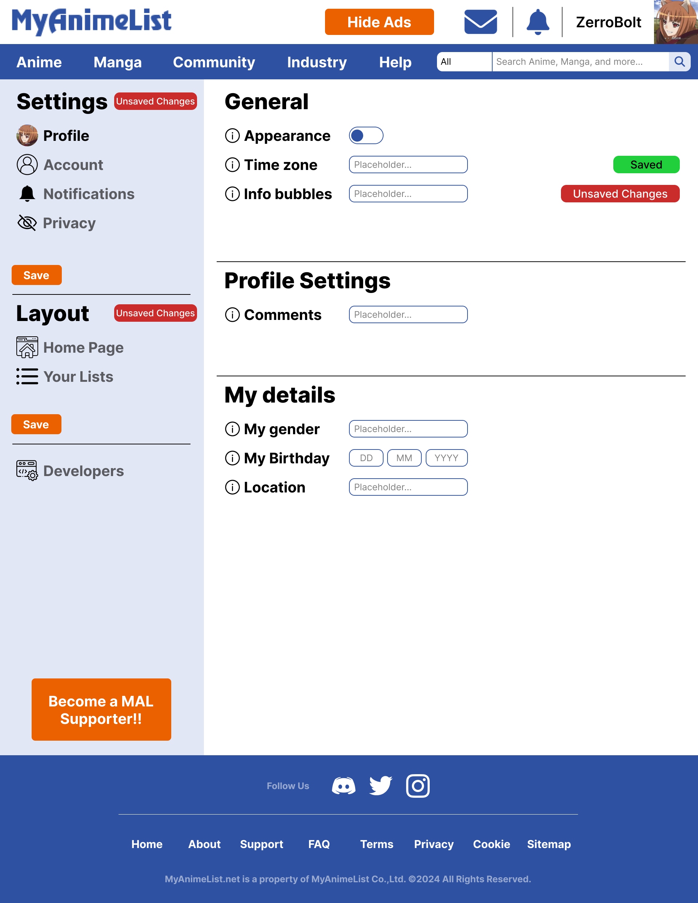

For the Web UI assignment in the UI/UX Design module, I had to redesign the user interface of an existing website. I chose MyAnimeList, a website for tracking and discovering anime and manga.
I redesigned the home page and one of the settings pages, creating a medium-fidelity interactive prototype. My goal was to create a more consistent and visually appealing interface while maintaining the existing functionality and overall purpose of the website.
Go to Figma to see the full interactive designThe redesign uses a more unified visual style, with greater consistency between different interface elements and pages. The images below show the final result of my redesign.


Copyright © Tycho Kerkhofs. All rights reserved.